1
教科の中身と、動くものを、一人で
単元を組む人と、教材を作る人が分かれません。だから試作を見てから、中身を決め直せます。企画から教室で試すまで、1週間で回ります。
Portfolio 2026
願いや想いを、形にする。
子どもの「できた」と、先生の「こうしたい」を。
この3つが重なるところに、自作した14本の教材があります。
小学校教員6年目。国語・社会・理科・算数・体育・特別活動の7教科で、14本の教育アプリを自作しています。 子どもが使う教材と、先生が使う道具の両方です。
What I bring
Strength
わたしの強み
「アプリを作れます」だけでは、お仕事にはならないと思っています。 教材会社の方・研修をお考えの方に、わたしが持ち込めるものを4つ書きます。
1
単元を組む人と、教材を作る人が分かれません。だから試作を見てから、中身を決め直せます。企画から教室で試すまで、1週間で回ります。
2
Chromebookで開く／ネットが切れても止まらない／個人情報が校外に出ない／45分のどこに入るか。この4つを満たす形でしか作りません。あとから「現場では使えない」と言われることがありません。
3
ICT×各教科の実践者は増えました。ICT×特別活動は、ほとんどいません。わたしは全国道徳特別活動研究会の幹事です。実践してくれる先生のつながりごと、お渡しできます。
4
のべ101名の前後比較（学年平均75.4→82.4）。今年度は論文4本。設計書も自己批判レビューも文書で残しているので、そのまま企画書に使えます。
What I made
Works
作った教材
自作した14本のうち、いま人に見ていただきたい9本を載せます。 上の2本には、画面と設計をくわしく書いた紹介ページがあります。 子どもが使う教材が7本、先生が使う道具が2本です。
 これらの教材は、すべて Claude を使って作りました。
これらの教材は、すべて Claude を使って作りました。
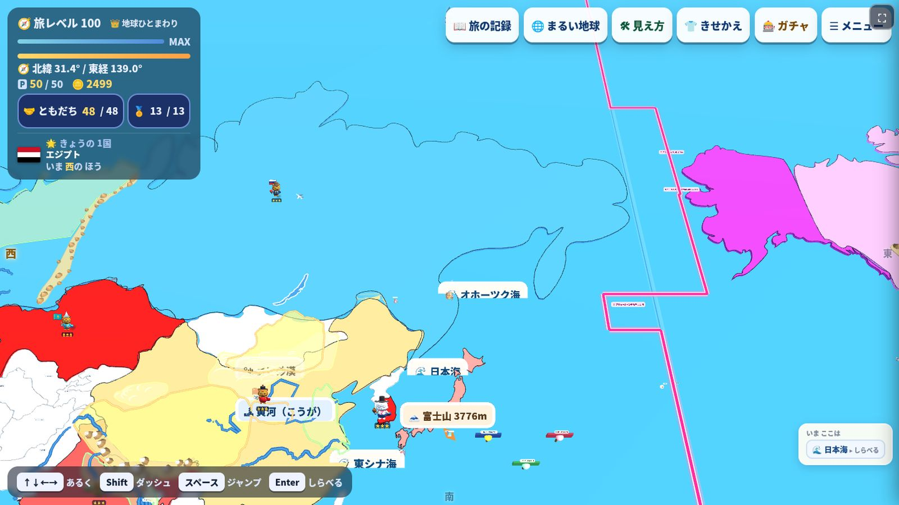
別名『地理クエスト』
日本と世界を「旅行」して覚える地理教材。白い地図は、うばわれたからではなく、まだ行っていないから白い。4択で知識を、きせかえと模様がえで文化を、地球球体モードで地理の感覚を、記述問題で受験まで。5つの入口があります。
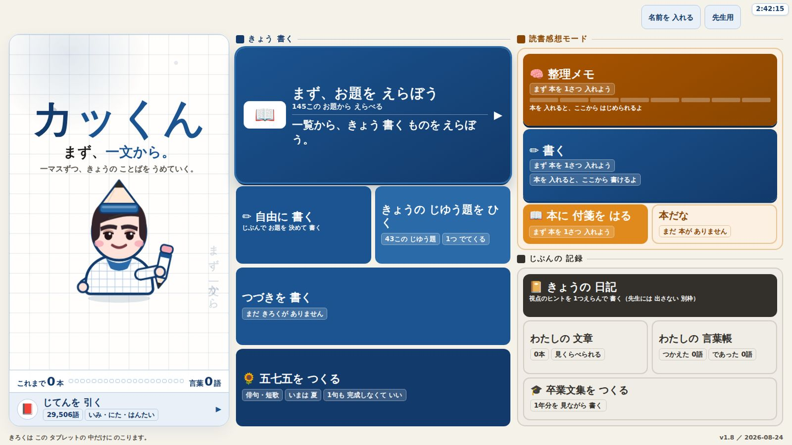
書くことが苦手な子のための作文アプリ。書く画面の横に、五十音順の前後が出る辞書と、五七五を入れ替えて試すマス。音声入力は合理的配慮として入れました。学校でマイクが使えなくてもOS標準で成立します。
授業の冒頭5分で回す漢字アプリ。今日の8問・手書き入力・書き順ナビ・まちがえた字の登録。熟語は自作の辞書から機械で作りました。2タップ・5秒で始まることが仕様です。
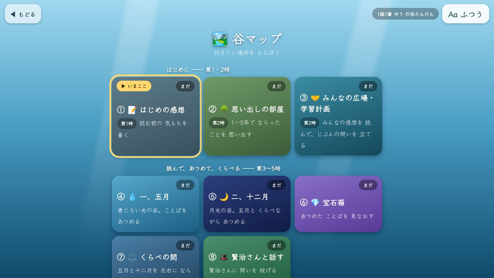
「やまなし」1単元まるごとを1つのHTMLに。学習用語カード41語から200字の記述までを通ります。他の子の「問い」が、全員の画面に黙って出ています。交流の時間をとらなくても、隣の子の考えが視界にあります。
見本と自分の動画を2画面で見比べる体育の教材。その場で撮って、その場で比べます。先生が作った紙の段階表（Word）から図166枚を取り出し、27技に対応づけました。紙の資産は、捨てずに移せます。
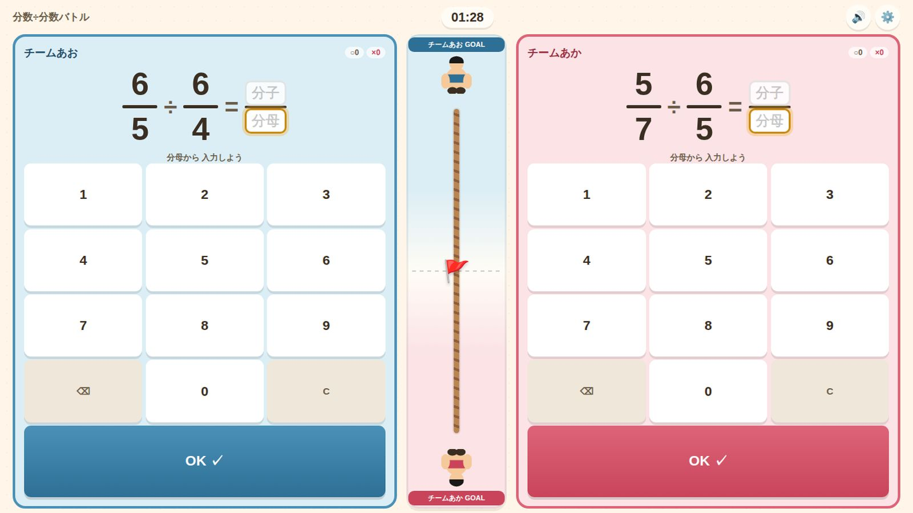
分数の計算をくり返す教材。同じ問題で「約分しないと丸にならない」版を別に用意しました。難しくするためではなく、その時間のねらいで先生がルールを選べるように。
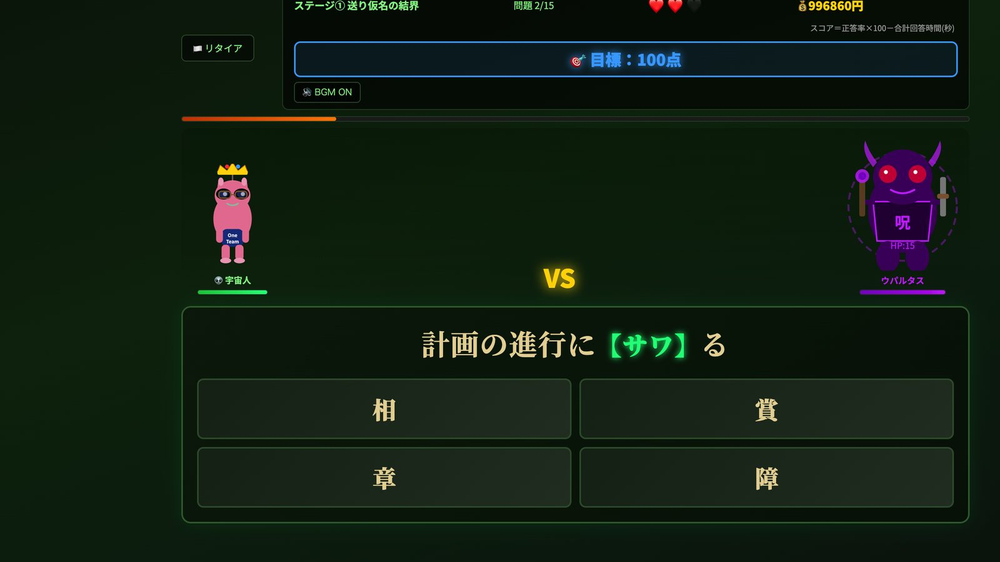
『漢字トレジャーハンターたよす』の略
漢字が苦手な子のための4択・ステージ制。「まず楽しく苦手を見つける」ことだけに絞りました。9本のうち、効果を数字で測った唯一の教材です（→ 教室で確かめたこと）。
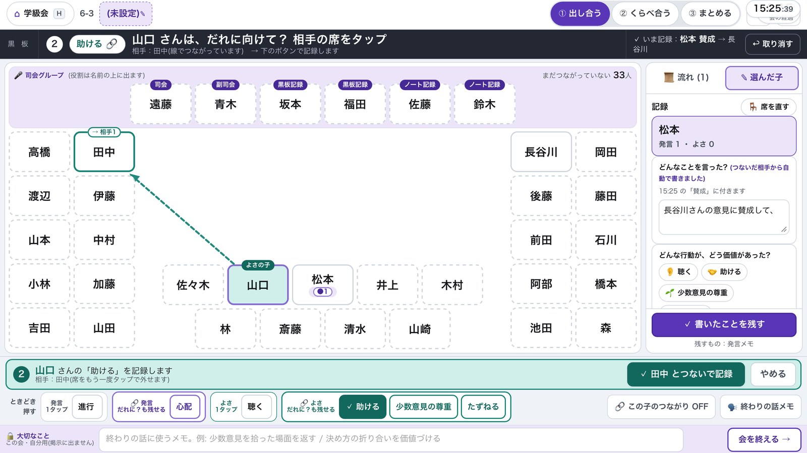
評価を、授業を止めずに。45分×35人の中で後回しになる評価を、ワンタップで授業に取り戻す道具。入力は1人2タップ以内が目標値。個人情報は校内のスプレッドシートの中で完結します。
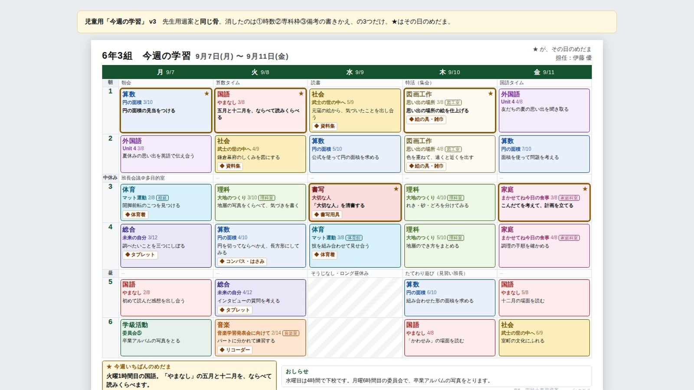
しゃべった予定の変更が、そのまま台帳に入ります。ねらいは音声ではなく、1つの台帳から4つ出ること ── 週案の印刷／時数の集計／児童用の配布／Classroomへの自動投稿。
このほかに かんクエ（3Dの学校を探検して漢字を学ぶ・筆順221字）、天体クエスト（4択を廃止し、答えを体の動きで示す）、 南砂町探検隊（PLATEAU 3,673棟の地域学習）、ツムグ（学級会の意見集約）、じてん（23,860語の自作辞書）、 測量ギルド（算数・縮図と比）、歴史クエスト（制作中）など。 先生用の道具は、動詞から名前をつけて統一しています ── 見取り→ミトリ、見比べ→ミクラベ、紡ぐ→ツムグ。
Evidence
Results
教室で確かめたこと
作った本数より、教室で何が起きたかのほうが大事だと思っています。いま数字で語れるのは、この1本です。
6年生3学級・のべ101名／光文書院の漢字カラーテスト（100点満点・50問×2点）
前回＝4〜5月のまとめテスト → 今回＝夏休み前のまとめテスト（2026年7月）／この間に授業内で確保した時間は2週間で週40分（朝学習1回＋国語の冒頭10分×3回）
※ 100点満点のテストです。差が見えるように、横軸は60〜100点の範囲だけを表示しています。
| クラス | 前回 平均 | 今回 平均 | 伸び | 受けた人数前回 → 今回 |
|---|---|---|---|---|
| 1組 | 72.7 | 83.5 | ↑ +10.8 | 34 → 34 |
| 2組 | 73.2 | 81.9 | ↑ +8.7 | 32 → 33 |
| 3組 | 79.9 | 81.8 | ↑ +1.9 | 35 → 34 |
| 学年 | 75.4 | 82.4 | ↑ +7.0 | 101 → 101 |
手立ては2つです。①漢字が苦手な子のためのアプリ『トレハん』で、まず楽しく苦手を見つける。 ②生成AIで熟語を差し替えた書き取り問題を作り、多様なプリントとして配る。 AIが作った問題をそのまま使うことはせず、差し替えたのは1割程度でした。
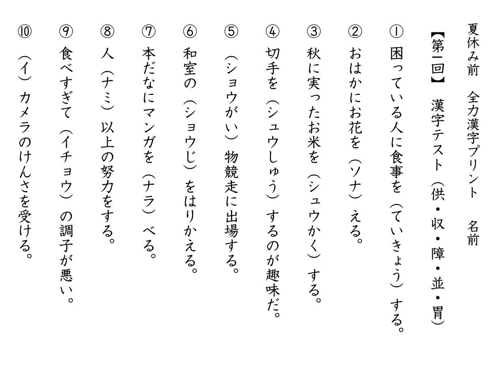
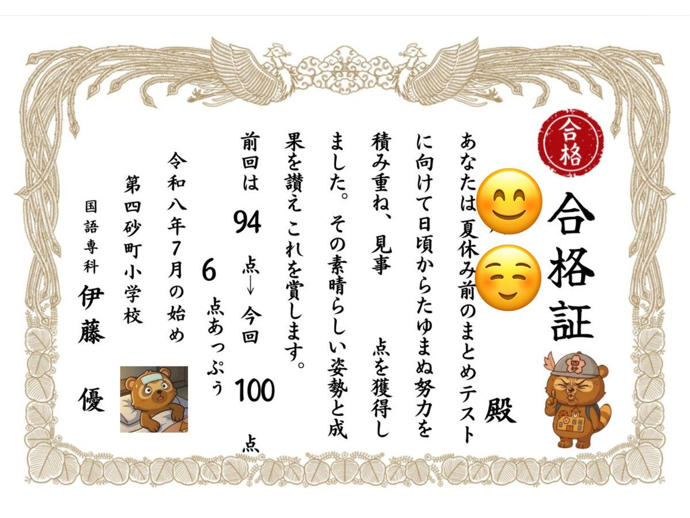
教材づくりに使っていた時間が圧縮できたぶんを、下位層への個別指導に回しました。 テストのあとも、79点以下の29名には学習プリントでもう一度挑戦してもらっています。 限られた時間の中で成果が出た理由は、アプリでも生成AIでもなく、この時間の付け替えだと考えています。
同じくらい大事なのは、伸びなかった子がいたことです。 3組はもともと高い水準にあり、今回の伸びは+1.9にとどまりました。 アプリはやったけれど「間違いを整理して苦手を確認する」ところまで進まなかった児童も、伸びていません。 楽しむだけでは足りない ── そこが、次に手を入れるところです。
※ 人数は各回にテストを受けた児童の数です。欠席などで前回と今回で人数が変わる学級があります（平均・中央値は、その回に受けた児童で計算しています）。
※ 上の数値は学年・学級の集計値で、個人が特定される情報は含みません。表彰状の画像は氏名を伏せてあります。
※ データは光文書院の漢字カラーテスト（100点満点・50問×2点）の結果を集計したもので、2026年7月8日に勤務校の管理職へ提出ずみです。
※ この実践は「学事出版教育文化賞」に応募し、論文を執筆中です（2026年9月提出予定）。
What I can do
Offer
できること
教材会社の方、研修や研究会をお考えの方、同じ学校現場の方 ── どの入口でも歓迎です。
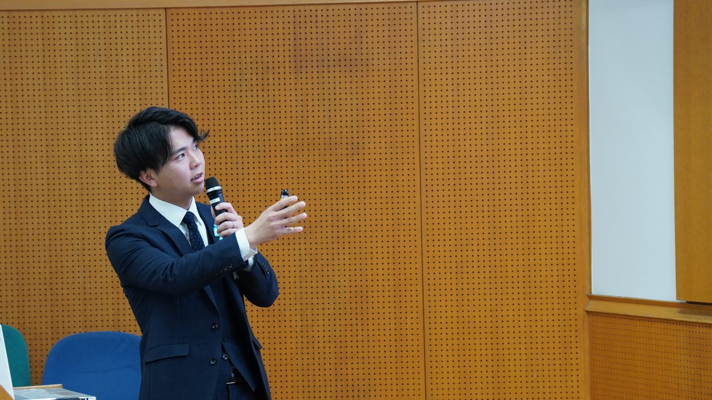
教材やデジタルコンテンツの監修、学校現場の制約に合わせた設計のレビュー、教材アプリの共同開発。 「Chromebookで動くか」「個人情報はどこに置くか」「45分のどこに入るか」を、現場の言葉と数字で詰められます。
校内研修、区市の研修会、研究会の分科会など。お渡しするのは「作り方」ではなく「確かめ方」です。 生成AIで教材を作る手順は、もう本でも動画でも手に入ります。足りないのは、出てきたものを 教室に入れる前に、誰がどう確かめるかのほう。自作14本で毎回踏んでいる手順を、そのままお話しします。
オンライン可／校内研修の1コマ（45分）から。人前で話してきたのは、全国道徳特別活動研究会の全国大会と江東区小学校教育研究会での提案です。 ご相談いただければ、学校の実情に合わせて中身を組み直します。
教育雑誌への寄稿、書籍の分担執筆。自作教材の設計書・客観評価・自己批判レビューを文書として残す習慣があるので、 実践を文章にする作業には慣れています。
お願い：公立学校の教員のため、報酬をともなうお仕事は任命権者への兼業許可の手続きが必要になります。 お引き受けできる形・時期が案件によって変わりますので、まずはご相談ください。手続きの見通しも含めてご返答します。
In progress
Now
いま取り組んでいること
結果が出たものだけでなく、走っている途中のものも書いておきます。
Contact
お仕事のご相談、教材を見てみたいというご依頼、同じ現場の先生からのご質問、どれでもお気軽にどうぞ。数日以内にお返事します。
yuutennis657@gmail.com特活ひろばは、特別活動の実践を持ち寄る先生のグループチャットです。同じ現場の先生はどうぞ。
Who I am
Profile
プロフィール
はじめまして。どんな人間が、どんな場所で、何をしてきたのかを先に書いておきます。
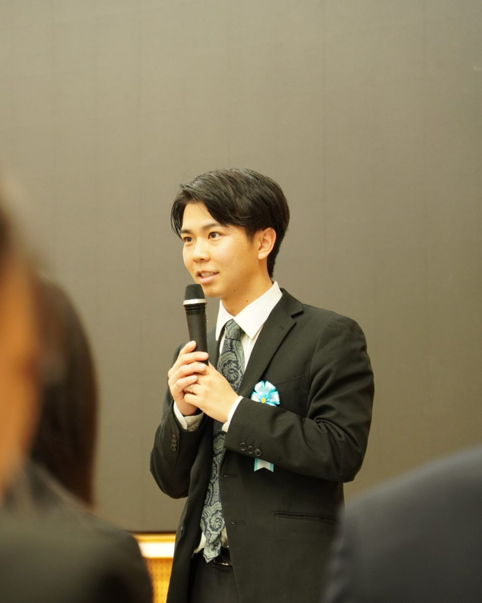
3つの軸
伊藤 優ITO YU ／ いとう ゆう
1998年生まれ。東京都の公立小学校で教員6年目、いまは6年生の担任と国語専科をしています。
教材は、自分で作ります。国語・社会・理科・算数・体育・特別活動の7教科で14本。 作って終わりにせず、教室で使って、効いたかどうかを数字と文章で残すところまでを一続きの仕事だと思っています。
もうひとつの軸が特別活動です。全国道徳特別活動研究会の幹事と、江東区小学校教育研究会 特別活動部の副部長を務めています。 学級会や児童会活動の話合いを、どうやって子どもの手に返すか ── ここ数年、いちばん考えてきたテーマです。
ICTと特別活動は、まだほとんど重なっていません。その空いている場所に、自分で作った道具を持って立っています。
校外での役職と、外に出した実践です。所属や肩書よりも、そこで何を提案したかのほうを見ていただければと思います。
令和5年度〜8年度2023 – 現在
役職
全国道徳特別活動研究会「語る会」 特別活動 幹事 全国の特別活動の実践者が集まる研究会で、特活の幹事を務めています。実践している先生とのつながりが、ここにあります。令和7年度2025 – 2026
提案
同研究会 全国大会にて、児童会活動の提案 第47回 全国研究大会。自分の学校の児童会活動の実践を、全国の場で提案しました。令和5年度〜7年度2023 – 2026
役職
江東区小学校教育研究会 特別活動部 副部長 区内の小学校の特別活動部の副部長として、研究会の運営と提案に関わっています。現在継続中
役職
教育セミナー授業技術分科会 委員 授業の技術を持ち寄って学び合う会の委員を務めています。2026年7月
実践
漢字の実践で、のべ101名の前後比較 6年生3学級・のべ101名。学年平均 75.4 → 82.4（＋7.0）。集計は勤務校の管理職へ提出ずみです。→ 教室で確かめたこと2026年度
執筆
教育論文4本に応募（執筆中） 学事出版教育文化賞／ICT夢コンテスト／東書教育賞／道徳と特別活動の教育研究賞。→ いま取り組んでいること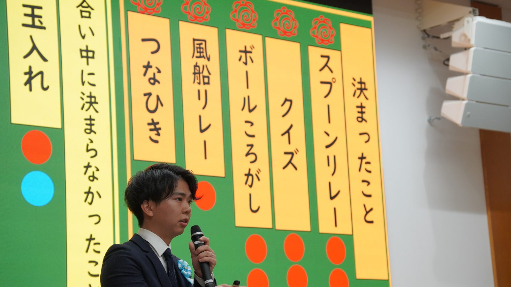
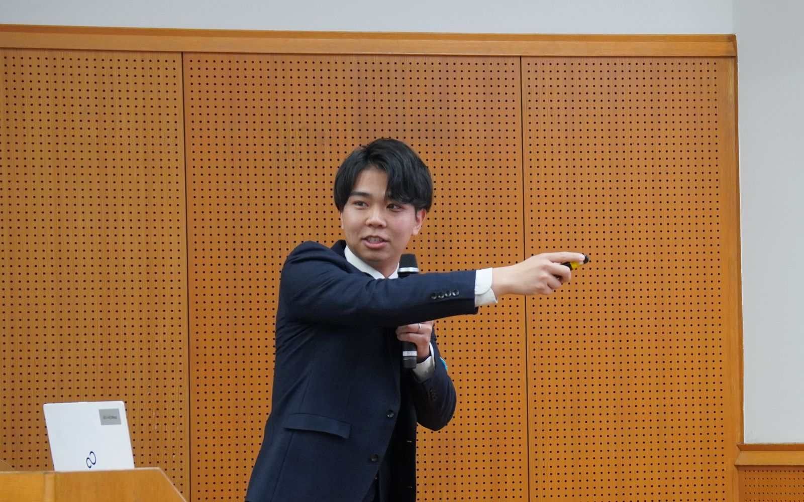
趣味は、サウナ・スノーボード・バドミントン・動画編集・バイブコーディング。仕事の話ばかりでは、人となりは伝わらないと思うので。
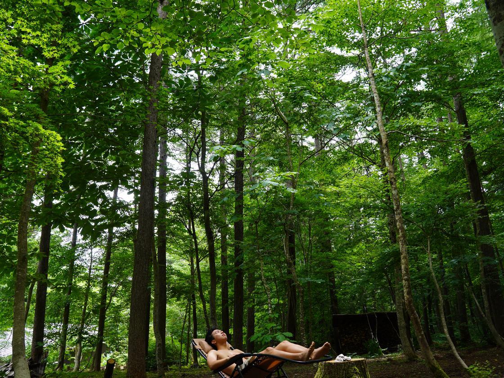
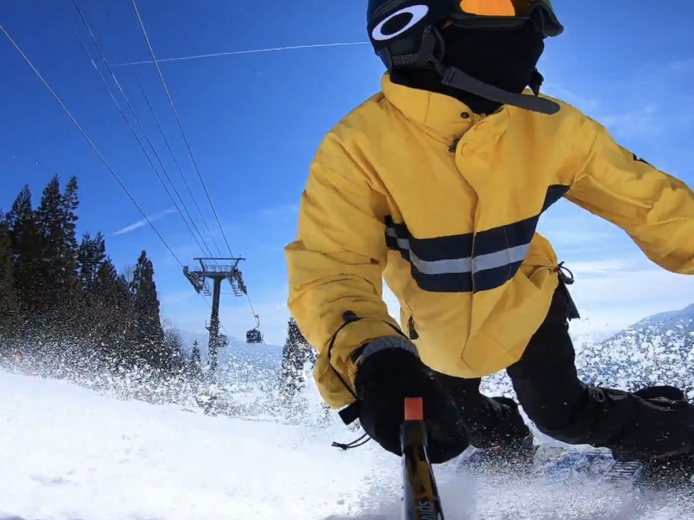
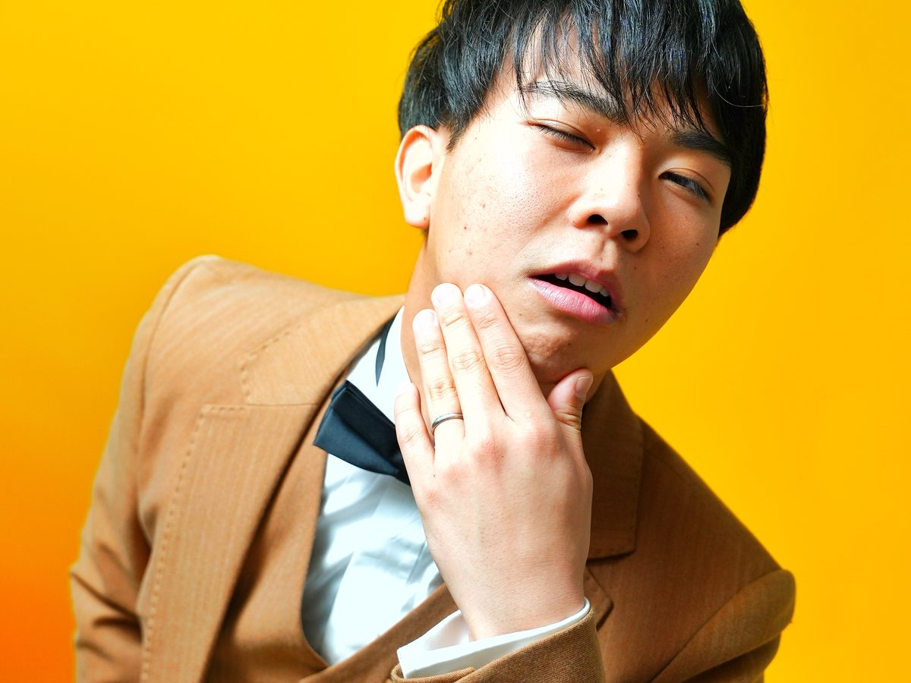